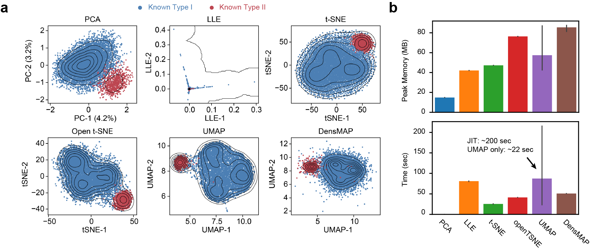

Dimension Reduction Algorithms
Benchmarking
There are many kinds of algorithms for dimension reduction. In (a), we use the m5C sites in fly embryos, which are validated to be majorly contributed by NSUN2 (blue) and NSUN6 (red), to test the peformace of four types of algorithms (PCA, LLE, t-SNE, and UMAP). As previously pointed out, UMAP is the best algorithm for condensing the sequences. t-SNE will break the relationships of the data points, and too sparse in some regions. PCA is somehow lucky in this test, but perform very bad with more complicated data (see below). DensMAP, a variant of UMAP, works well for some cases, but still not so suitable for compliated datasets (see below, too).
For (b) memory and time usages, we found that UMAP is moderate in computation burdern. Notably, UMAP requires a JIT (Just-in-Time) compiling process when it runs at the first time. This mechanism makes UMAP showhow slower in some cases. However, when JIT is finished, UMAP runs much faster than t-SNE.
In Noc-treated HeLa cells, which contains 4 types of motifs, PCA and DensMAP performed not so good. From the density contour drawn in the figure, we can clear found a cluster of Nop2 (purple) tightly adjacent to the cluster of NSUN2 (green). However, such a pattern is not clear in both PCA and DensMAP.

Scanpy and iMVP
Here is a small disscussion about Scanpy (https://scanpy.readthedocs.io/en/stable/tutorials.html), a popular package for single cell analysis. In fact, we also tested Scanpy at the beginning, but we found that some assumptions in single cell analysis is different from that in modification motif analysis.
Normally we will perfrom a pre-processing on the single-cell data with PCA, to reduce the number of dimensions (yes, we can skip it in
Scanpy). However, such a process cause the loss of information for UMAP. Normally, a series of one-hot encoded sequences should be perfect in practices, and such a pre-processing is not necessary.The data structure packed in
Scanpyis not so friendly in our analysis. We would love to have a more flexible one in pratices.
Parameters of UMAP
Here are some tips for selecting UMAP parameters:
init will impact the performance of UMAP, but that might not affect the clusters.
min_dist is important to make sure that clusters will be separated correctly. We will use a low (close to zero) min_dist in practices.
n_neighbors also affect the final result of projection. Higher n_neighbors will make it runs longer. We suggest a value between 20 to 50. A super high n_neighbors will not help your projection a lot.
metrics is an important parameter for the reulsts. In practices, most of the metrics provied by UMAP have similar performance handling one-hot encoded sequences, except for chbyshev. Among these methods, the standard eucilidean (in CPU version) and minkowski (in cuML) work fast, so we suggest you to use the default one.

Tip
Remember that the reproducibility of UMAP dependencies on both random_state and n_jobs, in addition to other key parameters.